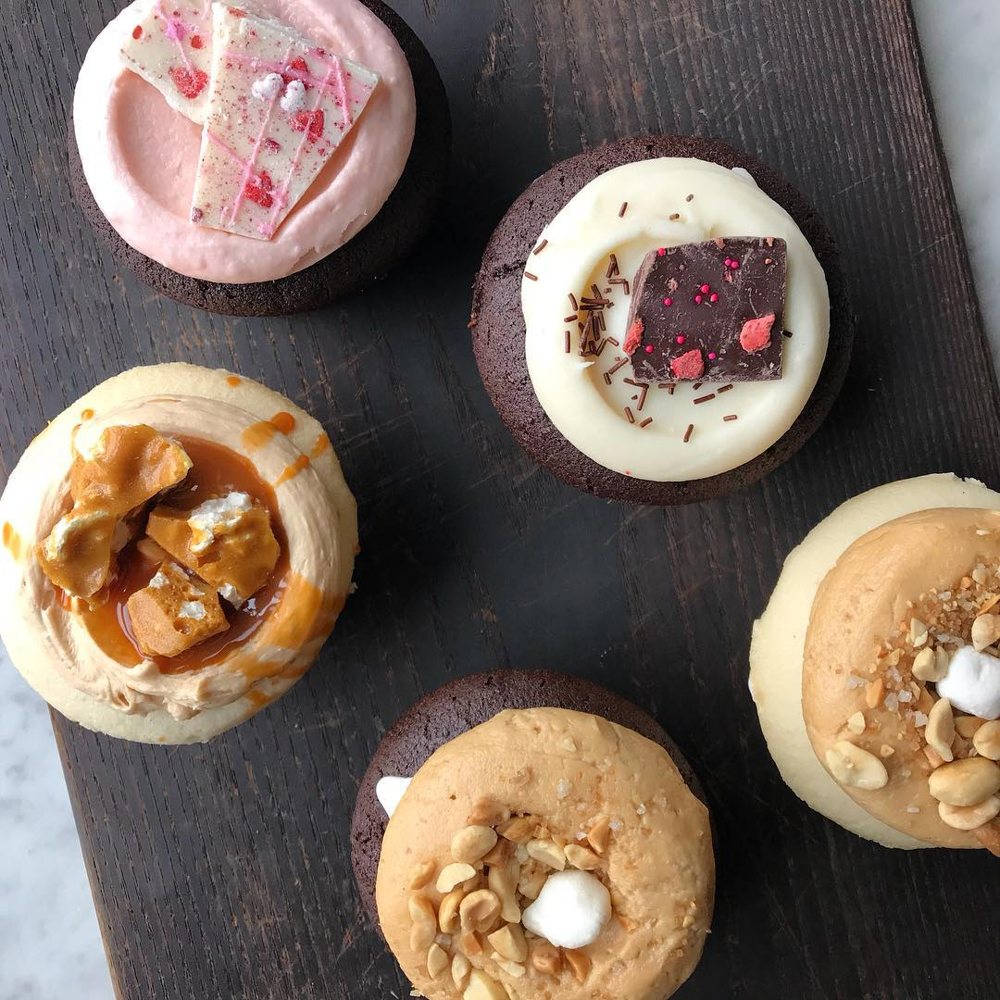
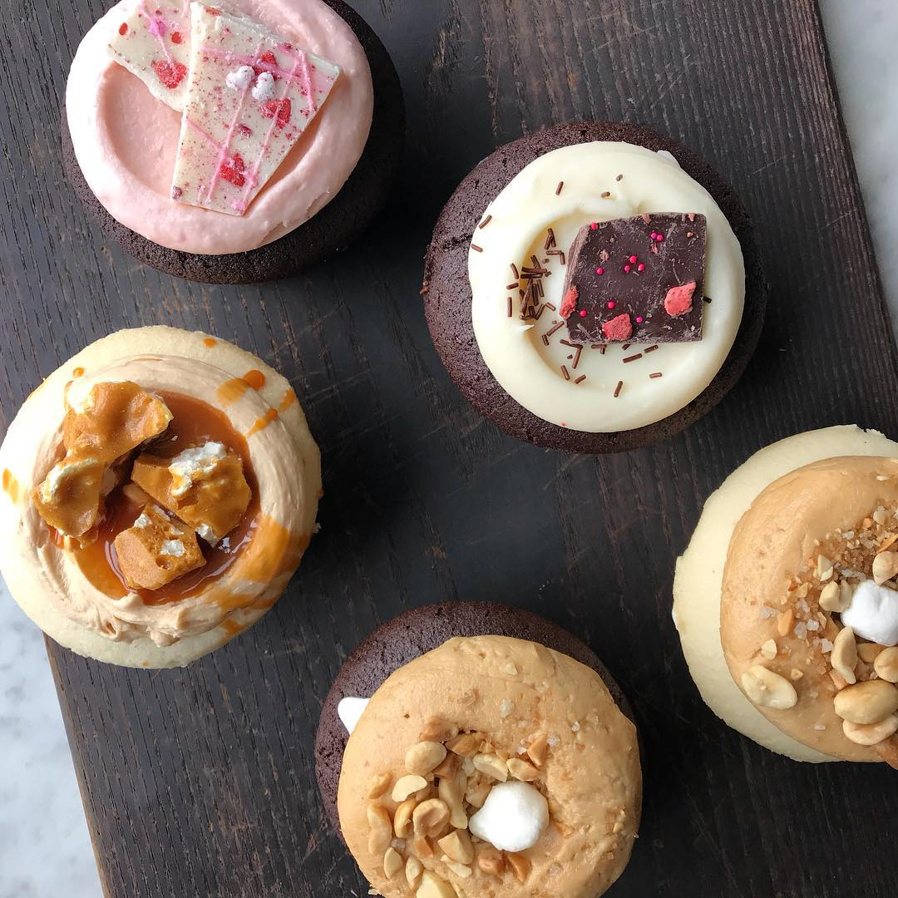
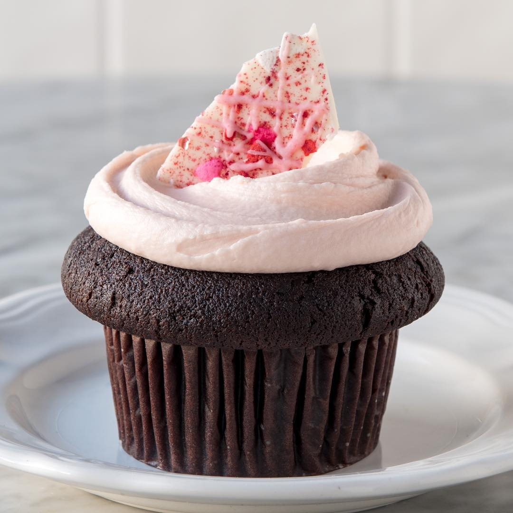
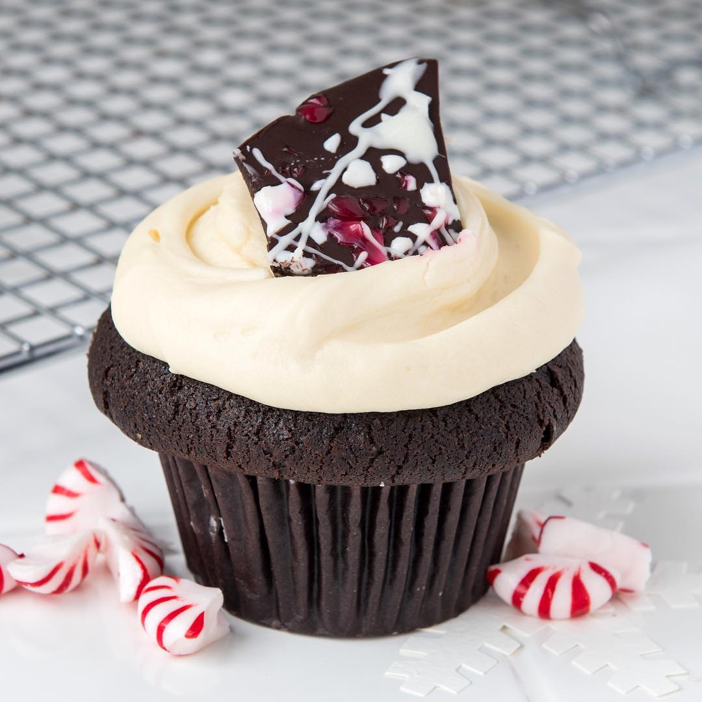
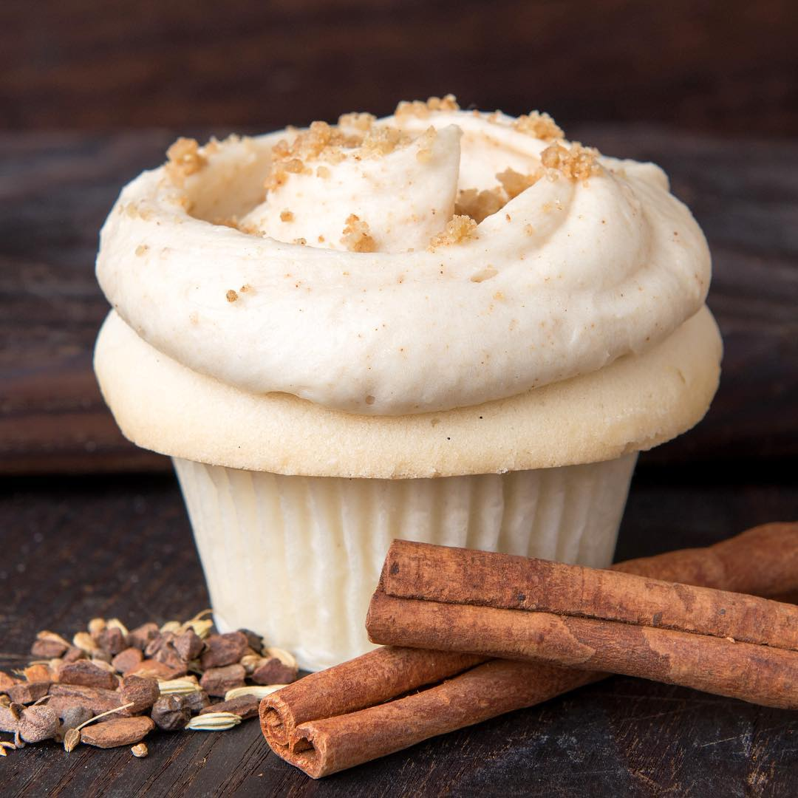
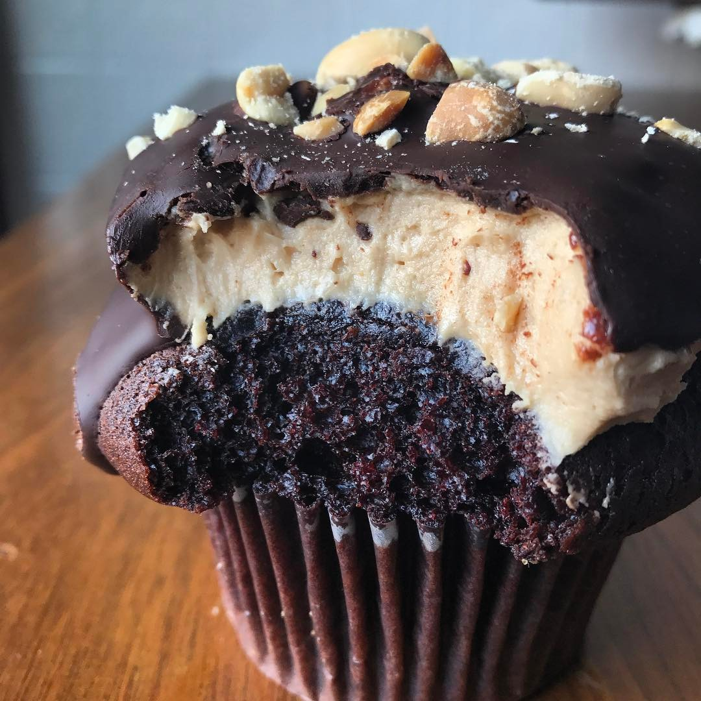
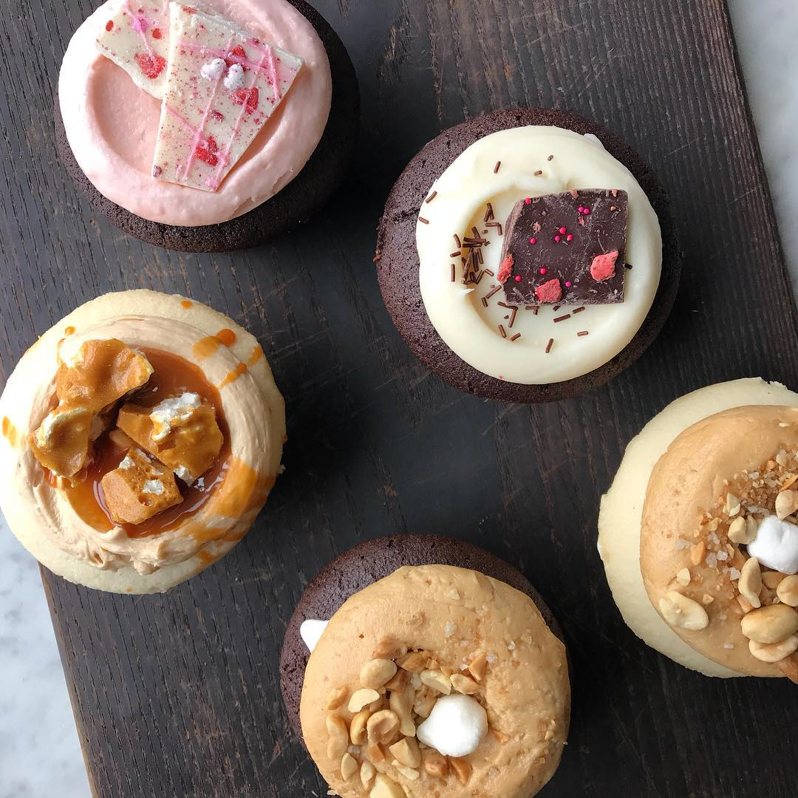

Boutique

The geeky duo of Curt and Sonny invision Geek Sweets on their third day of Epicodus class. Little did they know that it would evolve into the most dominate cupcake shop in all of Seattle. Using farm to table ingredients, our artisian hand crafted cupcakes made it on the national scene featured by Oprah Winfrey's on her favorite things and shout out by the famous rap artist Drake!